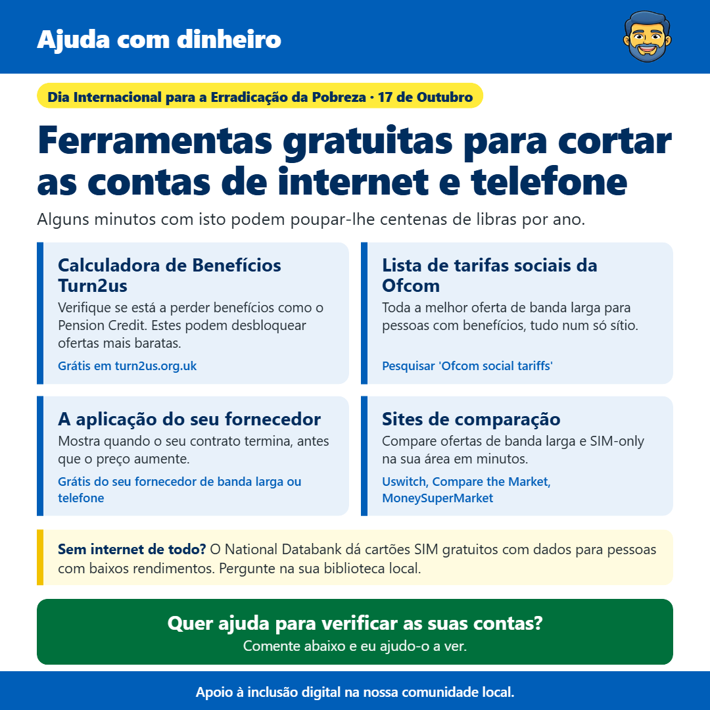

Ferramentas gratuitas para cortar as contas de internet e telefone
Por James Gartshore · · DinheiroEm resumo
- Calculadora de Benefícios Turn2us: Verifique se está a perder benefícios como o Pension Credit. Estes podem desbloquear ofertas mais baratas. (Gratuito em turn2us.org.uk)
- Lista de tarifas sociais da Ofcom: Todas as ofertas de internet mais baratas para pessoas com benefícios, tudo num só sítio. (Pesquisar "Ofcom social tariffs")
- A aplicação do seu fornecedor: Mostra quando o seu contrato termina, antes que o preço aumente. (Gratuito do seu fornecedor de internet ou telefone)
- Sites de comparação: Compare ofertas de internet e SIM-only na sua área em minutos. (Uswitch, Compare the Market, MoneySuperMarket)

Olá a todos, hoje é o Dia Internacional da Erradicação da Pobreza, por isso queria partilhar algumas ferramentas gratuitas que podem ajudar a cortar o custo das suas contas de internet e telefone. Muitas pessoas estão a pagar mais do que precisam sem perceber.
Um bom sítio para começar é a calculadora de benefícios gratuita Turn2us em turn2us.org.uk. Leva apenas alguns minutos e diz-lhe se pode ter direito a benefícios que não está a pedir. Isto é importante porque benefícios como o Pension Credit podem desbloquear outras poupanças, incluindo ofertas mais baratas de internet e telefone.
Se tiver Universal Credit, Pension Credit ou outros benefícios, poderá ter direito a um tarifário social. Estes são pacotes de internet mais baratos oferecidos pela maioria dos grandes fornecedores, e muitas pessoas que se qualificam não sabem que existem. A Ofcom mantém uma lista de todos eles num só sítio, que pode encontrar pesquisando "tarifários sociais da Ofcom".
Também vale a pena descarregar a aplicação do seu fornecedor de internet ou telemóvel, se ainda não o fez. Mostra-lhe quanto está a pagar e quando o seu contrato termina. Quando um pacote termina, o preço geralmente sobe, por isso saber a data significa que pode ligar para conseguir um pacote melhor ou mudar antes que isso aconteça.
Sites de comparação como Uswitch, Compare the Market e MoneySuperMarket permitem-lhe ver os pacotes de internet e SIM-only disponíveis no seu endereço em poucos minutos. Se tiver o seu telemóvel comprado, um pacote SIM-only pode custar uma fração de um contrato, e pode manter o seu número quando mudar.
E se você ou alguém que conhece não conseguir ligar à internet de todo, o National Databank oferece cartões SIM gratuitos com dados móveis para pessoas com baixos rendimentos. Pergunte na sua biblioteca local ou centro comunitário para saber como conseguir um.
Se quiser ajuda para verificar as suas faturas ou encontrar um pacote melhor, basta enviar-me uma mensagem e farei o meu melhor para ajudar.
Espero que isto ajude, e sinta-se à vontade para partilhar com quem possa achar útil.